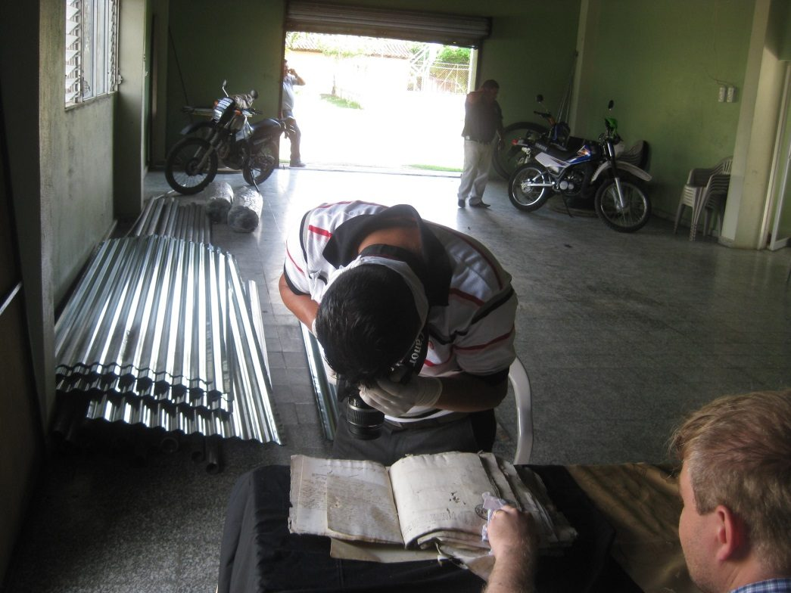
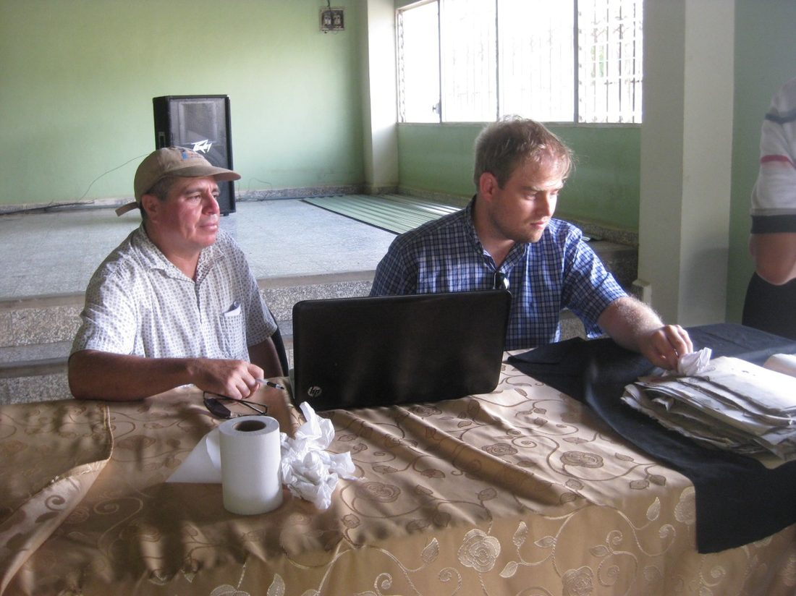

Archivo Municipal de Sensentí · Ocotepeque, Honduras
Transcripción paleográfica y edición de 353 láminas del archivo municipal de Sensentí, en el occidente de Honduras. Treinta y un expedientes entre 1787 y 1857, cada lámina con su fotografía, su transcripción renglón a renglón y su lectura en español de hoy.
En orden cronológico. Cada uno se abre en su propia página, con las láminas enfrentadas a la transcripción.
Un hombre mata de una estocada al esclavo del cura y huye. Año y medio después cae preso en Chiquimula por robar una mula, bajo nombre falso, y allí confiesa el homicidio. Lo devuelven de pueblo en pueblo a Gracias a Dios — y el expediente se cierra sin sentencia.
Dieciséis planas que el catálogo daba por dos expedientes y resultan ser cinco: un pleito por calumnia de 1814, un plano de agrimensura de 1882 colado suelto en el legajo, el pleito de una milpa comida por el ganado en 1793, una transcripción moderna y un cuadro estadístico sin fecha.
Un hombre que se declara «de calidad indio», natural de Corquín, es preso por llevarse un novillo del hierro de su propio padre camino del pueblo de Gualcha.
Una ejecución por trescientos pesos prestados en 1792 que da, de paso, las dos cosas que se buscaban: la fórmula «en el nuebo Poblado de Sensenti» fechada con todas sus letras, y la distancia de la aldea de La Labor a la cabecera. Con una plana añadida que cierra el pleito de Luisa Cartagena.
Una información sumaria abierta el día después de una boda, y el informe que el cura de Ocotepeque manda en respuesta. Entre los dos suman trece planas sobre una mujer a la que se deposita tres veces en tres casas distintas y a la que, en ninguna de ellas, se le toma declaración.
Mariano Guzmán, vecino de Sensentí, pasó un año y dos meses preso en la Real Cárcel de Corte por un hurto del que nadie llegó a acusarle. Llegó hasta la Real Audiencia, volvió con provisión firmada por el regente, y la provisión se estrelló contra el fuero militar del cuerpo al que él mismo pertenecía. Al final le pasaron la cuenta de costas: trece pesos y siete reales.
El asiento de salida con que se anotó el envío del recurso de Mariano Guzmán al Supremo Tribunal. No es pieza del proceso sino marca de su tramitación, y la palabra «vindicado» la sitúa después de la exculpación.
Diecisiete años después de una pelea a espada junto a la quebrada del Agua Blanca, el alcalde de Sensentí prende en Cucuyagua a un labrador mulato libre que había vuelto al partido y vivía sin recelo. Diecisiete planas en las que ni el reo ni ninguno de los cuatro testigos sabe firmar.
Cuatro planas en que un vecino de Sensentí pide a la justicia que le devuelvan a una mujer que huyó de su casa en mayo. Para que pueda ser aprehendida, la describe entera: la edad, el pelo, la cara, las marcas de la viruela. Es el retrato más completo de una persona esclavizada en todo este archivo, y existe porque alguien la reclamaba como cosa suya.
Dos piezas separadas por medio siglo y unidas por la misma pregunta: quién puede ocupar un cargo y con qué se prueba. Una real orden de 1794 que exige cristiandad, limpieza de sangre y legitimidad en treinta días; y un cuadernillo de juicios verbales del juzgado de Sensentí que resulta ser de 1847, no de 1848-49.
Una señora se querella porque la difamaron ante el cura y le estorbaron el casamiento; el difamador reconoce el papel y se retracta. Siete años después, un vecino de Corquín preso por herrar una ternera ajena sale bajo fianza, y el dueño acaba desistiendo. En ninguna de las dos hay condena.
El alcalde de Goarcha mata una res del hierro de un vecino de Sensentí y confiesa. Se la habían vendido los hermanos Reyes en once pesos. Nadie es condenado: se prorratean cinco pesos entre los dos hermanos y pagan cuatro.
Ocho planas que el catálogo daba por dos expedientes y son cuatro, con las dos fechas equivocadas. La pieza central es una partición de bienes de 1804 —no de 1793— con el inventario de ganado entero y seis herederos que no saben firmar. Y la palabra que se esperaba encontrar en la otra pieza no está.
Se procesa a un labrador mulato libre por amancebamiento, resistencia y fuga. De las confesiones sale otra cosa: una pareja que se dio palabra de casamiento, un embarazo, un impedimento canónico y un cura que negó tres veces la dispensa. Cuarenta y siete planas en las que firma una sola persona.
El final de la declaración de una viuda en una causa por amistad ilícita e incumplimiento de palabra de casamiento. El impedimento es de afinidad, por un trato anterior del reo con una hermana de ella.
El cabildo de indios de Nuestra Señora de Belén de Gualcha pide un año de plazo: no ha podido enterar el tributo del tercio de Navidad, «por la mucha nesesidad que ha avido en nuestro Pueblo».
Dos vecinos se destrozan las siembras a orillas del Sumpul. Pero bajo el pleito de cercas corre otro: dónde vive realmente Anselmo Pérez, y qué justicia manda sobre él. En el expediente queda su certificación de tributario del pueblo de Chalatenango.
Una mujer criada desde niña en casa del cura de Cucuyagua reclama ante el juzgado el ganado que él le dejó en pago de toda una vida de servicio.
El otro extremo del pleito de Luisa Cartagena: el alegato de Aranda, la réplica de ella, y una cuenta del ganado depositado que nombra a diecisiete vecinos del valle con las cabezas de cada uno. Cuatro de los diecisiete son mujeres. El papel escribe sesenta y seis de total y las partidas suman sesenta y cinco.
Luisa Cartagena, vecina de Cucuyagua, sin «doña» y sin saber escribir, demanda a un hombre con tratamiento por haberla despojado de setenta reses que le donó un cura. Maneja la doctrina del despojo violento, y consigue que el asunto suba a la Intendencia de la provincia. El expediente no dice cómo acabó.
Voz privada en un archivo de fórmulas. Va dirigida a la misma Luisa Cartagena que en 1814 litigó por setenta reses sin «doña» y sin saber firmar. Le escribe un padre o tutor desmintiendo una orden que no dio.
Ignacio Valencia mata una vaca sin enseñar la piel ni la marca, contra el bando. Era de don José Máximo Bueso, perdida en las vegas del Río Grande. Padre e hijo van presos de Cucuyagua a Sensentí — y el expediente se corta antes de la sentencia.
Catorce planas con el inventario de una casa del valle: camisas de Bretaña y de Ruán, loza, herramienta, diecisiete vacas paridas a nueve pesos, una sortija de oro, un lienzo del Señor Crucificado y dos hierros de herrar, repartidos entre tres herederos a doscientos dieciocho pesos y real y medio cada uno.
Un vecino reclama la parte de la hacienda de San Juan que heredó su mujer, denuncia que le echan los animales y le cierran la salida, y acaba pidiendo que un juez agrimensor señale a cada uno lo suyo.
Dos oficiales de oficio, los dos mulatos y los dos alfabetizados, riñen a cuchillo junto a la iglesia de Sensentí después de beber aguardiente. Uno se acoge a sagrado. Seis semanas después piden juntos que se corte la causa porque son amigos. Doce planas de movilidad artesanal entre tres provincias.
Felipe Chévez, oriundo de Nicaragua y casado desde 1826 con Macedonia Carrejón, reclama la herencia de su suegra. El alcalde registra que en su archivo no hay ninguno de los documentos citados.
Un juicio verbal completo, de la comparecencia a la notificación, en tres planas seguidas. Es de lo poco del archivo donde se ve el procedimiento republicano entero, con su fundamento legal citado por artículo.
El libro de cargo y data del tesorero de Sensentí para 1856, completo. De qué vive un municipio rural hondureño a mediados del siglo XIX: multas, ejidos, el fondo comunal, lo recogido en la fiesta de la Candelaria — y, gasto tras gasto, el sueldo atrasado del preceptor de la escuela. Contiene además un topónimo que sigue sin resolverse.
Catorce aperturas del libro de órdenes de la municipalidad, con el recibo a la izquierda y la orden nueva a la derecha. Entre ellas se puede reconstruir lo que cobraba el preceptor de la escuela de Sensentí y con cuánto retraso: diez reales la mesada, cuatro veces menos que el secretario, y siempre atrasado.
Un juicio verbal por desobediencia a la autoridad, con su carátula. Es de las piezas más tardías del archivo y la peor conservada: el velo de luz suprime el tercio final de casi todos los renglones.
La cubierta de una querella criminal, sin su cuerpo. Que la casilla del año esté en blanco no es una pérdida: es un dato sobre cómo se llevaba el archivo.
Qué es este fondo, cómo llegaron estas fotografías y qué hay dentro. Cada sección se abre por separado, y las tres primeras traen una figura cuyas marcas llevan a la página de cada expediente.
Sensentí es hoy un municipio del departamento de Ocotepeque, en el occidente de Honduras, cerca de la frontera con Guatemala y El Salvador. En el periodo colonial fue cabecera de partido, con jurisdicción sobre pueblos de indios y vecindarios de españoles, mulatos libres y ladinos repartidos por los valles del río Cucuyagua y del río Sensentí.
Su archivo municipal guarda papeles que van de finales del siglo XVIII a bien entrada la época republicana. No es un fondo grande ni ordenado: expedientes cosidos unos a otros, a veces descabalados, carátulas separadas de sus cuerpos, pliegos de papel sellado viejo reutilizados años después de impresos. El proyecto PARCS lo fotografió en 2012: 385 planas, de las que este sitio edita 353, repartidas en 31 expedientes.
Veintitrés de los veintiocho expedientes fechados empiezan antes de 1820: el grueso del fondo es colonial tardío y se concentra entre 1793 y 1819. Después queda un hilo delgado y ya republicano —una reclamación de 1828, una riña de 1851, los libros municipales de 1856 y 1857, un juicio verbal de los años sesenta—. Tres piezas no llevan fecha que fijar, y algunos legajos cosen juntas actuaciones de años muy distantes: el más extremo va de 1793 a 1882.
Figura 1
Cada renglón es un expediente. El punto marca un año fechado; la barra, un tramo continuo de actuaciones. Los renglones con línea de trazos son legajos que reúnen piezas de años distintos, cosidas juntas. Las marcas huecas son fechas que no están escritas en el papel y se deducen del sello o de la data incompleta.
Sin fecha que fijar
La minuta que faltabaposterior a 1794, sin dataCarta a Luisa Cartagenasin data, sin lugar, sin firmaUna carátula sin añola casilla del año quedó en blancoEl plano de agrimensura de 1882, al extremo derecho, no pertenece al pleito con el que se encuadernó: es la pieza intrusa que da título a ese expediente.
Casi todo es actuación judicial de primera instancia: el alcalde ordinario del partido, o un comisionado suyo, sustanciando un pleito con testigos de asistencia «a falta de escribano». Causas criminales por riñas, homicidios y hurtos de ganado; pleitos civiles por tierras, por reses y por deudas; mortuales con inventario y partición; peticiones de particulares. Desde la Independencia se suman actas de juicio verbal, cuentas municipales y órdenes de pago.
Su valor no está en lo excepcional sino en lo corriente. Dicen la edad de la gente, su calidad —«español», «mulato libre», «indio», «forastero»—, su oficio, su vecindad, cuántas reses tenía y si sabía firmar. Miden el partido en leguas: cuatro de Sensentí a Cucuyagua, dos de La Labor a la cabecera, el camino por la boca de la montaña de Gualcho. Y dejan oír, de vez en cuando, a personas que en ninguna otra clase de documento habrían quedado registradas.
Figura 3
Número de expedientes por materia. Un expediente puede llevar más de una: las 54 marcas se reparten entre los 31 expedientes, de modo que la suma no es el total.
Las materias son las del propio catálogo del sitio, las mismas con las que se filtra la rejilla de la portada.
Dentro del partido: Sensentí y su «Nuevo Poblado» —nombrado así en un auto de 8 de febrero de 1794—, Cucuyagua, Ocotepeque, Corquín, Gualcho, Cololaca, Guarita, la aldea del Jocomico, el Chinar de San Andrés, los Llanos de Santa Flora, la aldea de La Labor, la hacienda de San José de Sulán y el barrio de Esquipulas. Fuera de él, pero presentes en los papeles como destino de viajes, recursos y oficios: Gracias, Comayagua, Chiquimula, la Antigua Guatemala y San Salvador.
Figura 2
Los lugares nombrados en los expedientes que hoy se pueden situar, sobre los límites municipales actuales. El cuadrado es Sensentí, cabecera de partido; los círculos llenos, lugares nombrados cuyo nombre sobrevive en un municipio de hoy; los huecos, identificaciones probables pero no seguras.
Fuera del marco
Comayagua, Chiquimula, la Antigua Guatemala, San Salvador — nombrados en los papeles como destino de viajes, de recursos y de oficios, y fuera de este encuadre.
Nombrados y sin localizar
el Nuevo Poblado de Sensentí; la hacienda de San José de Sulán; la aldea del Jocomico; los Llanos de Santa Flora; el barrio de Esquipulas; la cuesta del Barreno; el Río Grande; el río Sumpul.
Límites municipales y centroides de la capa HND_adm2 del propio proyecto
(GADM, WGS 84). Las marcas señalan el municipio que hoy lleva ese nombre, no el asiento exacto del
pueblo colonial.
Las tomó Miguel Girón en el propio archivo, en 2012, bajo la supervisión y con la ayuda de Erlend M. Johnson, director del proyecto, y con la colaboración de la municipalidad de Sensentí. Se trabajó donde hubo sitio y luz.
Son buenas en general, pero tienen dos defectos que conviene conocer antes de usar las transcripciones: en varios expedientes el encuadre corta el margen derecho y se pierden los finales de renglón, y algunas planas están fotografiadas giradas noventa grados o con la mano del operador sobre el papel. Donde eso afecta a la lectura se advierte en la página del documento, plana por plana; las convenciones de transcripción y la regla de no conjeturar están en Método.


Dónde están hoy los folios. Siguen custodiados en el edificio municipal de Sensentí, hoy en cajas de archivo donadas por Erlend M. Johnson y Pastor Gómez Zúñiga. Quien quiera cotejar una lectura puede ir a verlos.
Quién hizo esta edición, y con qué. Erlend M. Johnson facilitó las transcripciones que se publican aquí y levantó este sitio. Conviene decirlo sin rodeos: no es paleógrafo. Las lecturas se produjeron con la ayuda del modelo de inteligencia artificial Claude Opus 5, de Anthropic, trabajando plana por plana sobre las fotografías, y después se revisaron. De ahí que cada lámina lleve declarado su grado de confianza, que las palabras dudosas vayan marcadas y que la regla sea no conjeturar.
Aun así, una transcripción hecha de este modo no es una edición crítica: puede equivocarse, y se equivoca sobre todo en lo que más importa —nombres propios, cifras, fechas—. Investigadores y demás interesados deben cotejar las láminas con cualquier transcripción antes de darla por buena. La fotografía va al lado del texto en todas las páginas precisamente para eso. Las correcciones son bienvenidas.
317 menciones de personas en los 31 expedientes. Dieciocho nombres aparecen en más de uno; el trazo de cada ficha dice con qué seguridad se sostiene la identificación.
Cada página lleva la signatura de sus láminas. Para citar una transcripción concreta:
Archivo Municipal de Sensentí, IMG_1700–1703, transcripción en Papeles de Sensentí, ed. Erlend M. Johnson (PARCS), consultado el [fecha], [URL].
Las transcripciones se ofrecen para uso académico. Nada de esto sustituye al cotejo con el original: los nombres propios y las cifras son lo primero que conviene verificar antes de citar, y en cada lámina se declara el grado de confianza de la lectura.
Quien cite conviene que sepa que estas transcripciones se hicieron con ayuda de inteligencia artificial y no son una edición crítica: quién las hizo y con qué se explica en El fondo.